Frequency Conversion
Converting MITs
The conversion of one MIT to another is fairly straightforward; each MIT spans one or more calendar dates. The output MIT is the MIT of the output frequency which includes the last calendar date covered by the input MIT.
Example 1: conversion to a higher frequency
fconvert(Monthly, 2022Q1) # 2022M3Because the last day of 2022Q1 is March 31st, 2022, and because that day lands in the days covered by 2022M3, the output MIT is 2022M3.
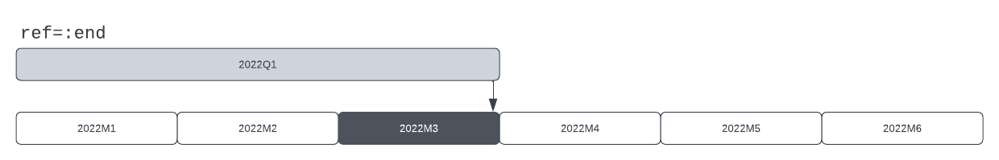
Example 2: conversion to a lower frequency
fconvert(Quarterly, 2022M3) # 2022Q1Because the last day of 2022M3 is March 31st, 2022, and because that day lands in the days covered by 2022Q1, the output MIT is 2022Q1. 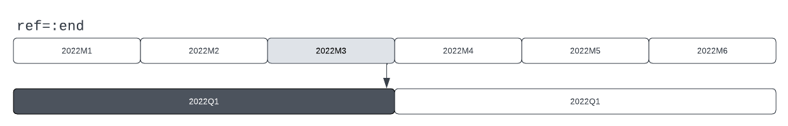
Options: ref
The previous two example do not specify the ref argument which defaults to :end. When ref = :true is employed, the comparison is between the first date in the input MIT and the days covered by the output MITs.
Example 3: conversion to a higher frequency, ref = :begin
fconvert(Monthly, 2022Q1, ref=:begin) # 2022M1Because the first day of 2022Q1 is January 1st, 2022, and because that day lands in the days covered by 2022M1, the output MIT is 2022M1. 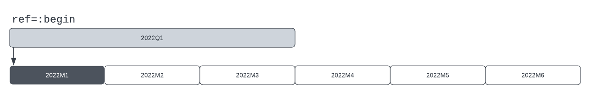
Example 4: conversion to a lower frequency, ref = :begin
fconvert(Quarterly, 2022M3, ref=:begin) # 2022Q1Because the first day of 2022M3 is March 1st, 2022, and because that day lands in the days covered by 2022Q1, the output MIT is 2022Q1. 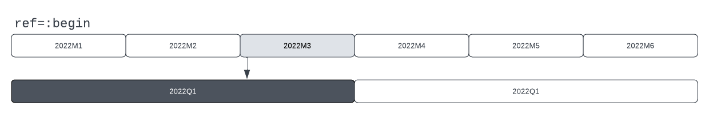
Converting MIT ranges
When converting an MIT range between frequencies, the first day in the first MIT in the input range is aligned with an MIT in the output range, as is the last day in the last MIT in the input range.
Example 1: conversion of an MIT range
fconvert(Monthly, 2022Q2:2022Q3) # 2022M4:2022M9In this example, the start and end of the input frequencies align well with the start and end of the output frequency. The first day of 2022Q2 is April 1st, 2022, which is included in the days covered by 2022M4, this is therefore the first MIT in the output frequency.
The last day in 2022Q3 is September 30th, 2022, which is included in the days covered by 2022M9, this is therefore the last MIT in the output frequency.
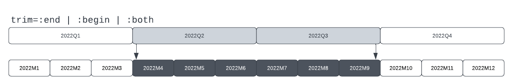
Options: trim
The trim option determines which MITs are included in the output range whenever the beginning and/or end of the input range does not perfectly align with the beginning/end MITs in the output range. The exact behavior depends on the relative frequencies of the input and the output ranges.
Converting to a higher frequency
When trim = :end the last mapped MIT in the output range will be removed when it ends after the last input MIT.
When trim = :begin the first mapped MIT in the output range will be removed when it starts before the first input MIT.
When trim = :both, both rules are applied. This is the default behavior.
Converting to a lower frequency
When trim = :end the last mapped MIT in the output range will be removed whenever the period between the last day in the last input MIT and the last day in the last output MIT is greater than the length of each input MIT. In other words, when there is at least one full input MIT missing before the end of the output MIT.
When trim = :begin the first mapped MIT in the output range will be removed whenever the period between the first day in the first input MIT and the first day in the first output MIT is greater than the length of each input MIT. In other words, when there is at least one full input MIT missing before the end of the output MIT.
When trim = :both, both rules are applied. This is the default behavior.
Example 2: trim = :end
fconvert(Quarterly, 2022M3:2022M10, trim=:end) # 2022Q1:2022Q3In this example, the last MIT in the input range, 2022M10, ends within the days covered by 2022Q4. However, there are one or more full MITs in the input frequency which also end within 2022Q4, but which are not part of the input range (2022M11 and 2022M12). As such, 2022Q4 is dropped from the output range.
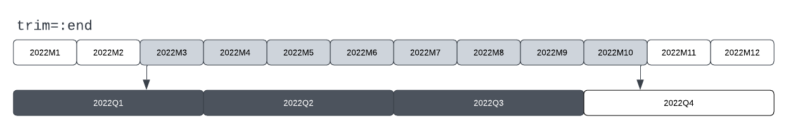
Missalignment at the start of the range is ignored in this case.
Example 3: trim = :begin
fconvert(Quarterly, 2022M3:2022M10, trim=:begin) # 2022Q2:2022Q4In this example, the first MIT in the input range, 2022M3, starts within the days covered by 2022Q1. However, there are one or more full MITs in the input frequency which also start within 2022Q1, but which are not part of the input range (2022M1 and 2022M2). As such, 2022Q1 is dropped from the output range.
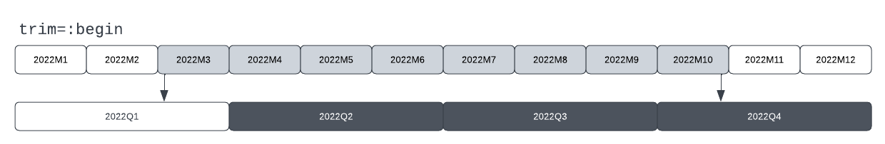
Missalignment at the end of the range is ignored in this case.
Example 4: trim = :both
fconvert(Quarterly, 2022M3:2022M10, trim=:both) # 2022Q2:2022Q3In this example, both ends are missing full input periods and so both ends are trimmed.
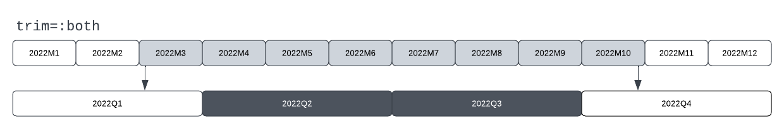
Converting TSeries to a higher frequency
Conversion of a TSeries to a higher frequency proceeds in two stages.
- Each MIT in the input range is mapped onto the last day in MITs in the output frequency. If
ref = :beginthey are mapped onto the first day in the output MITs. - The values in the output MIT are assigned based on the conversion method.
Note that the output range is similar to a conversion of the input range with trim set to the value of the ref argument.
Two conversion methods are available: :const and :even.
:constapplies the values of the input MITs to each mapped MIT in the output range.:evendivides the value in the input MITs evenly between mapped MITs in the output range.
The default is :const. The default ref is :end.
Example 1: method=:const
ts = TSeries(2022Q2, collect(2.0:3.0))
fconvert(Monthly, ts)In this example, each month in 2022Q2 is given the value 2.0, and each month in 2022Q3 is given the value 3.0. 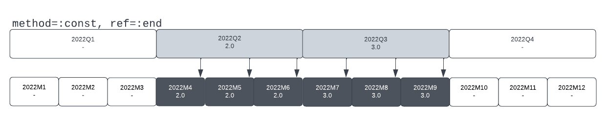
Example 2: method=:const, ref=:end
ts = TSeries(2023Y{11}, collect(2.0:3.0))
fconvert(Quarterly, ts, ref=:end)This example uses a Yearly TSeries with an end-month in November, Thus, the first MIT in the input TSeries spans December 1st, 2022, until November 30th, 2022. There is therefore a value which can be mapped onto December 31st, 2022, the last day of 2022Q4, and thus there is a value assigned for 2022Q4.
The value assigned to 2023Q4 comes from the second year of data as that year starts December 1st, 2023.
There is no value assigned to 2024Q4 as the last day in that quarter comes after the end of our data.
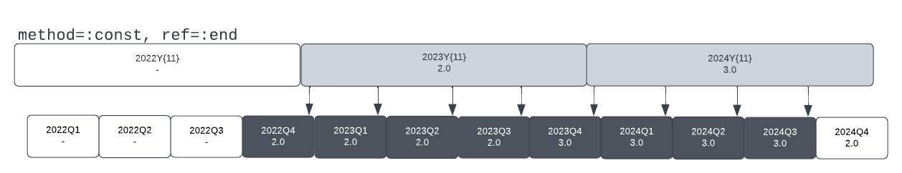
Example 3: method=:const, ref=:begin
ts = TSeries(2023Y{11}, collect(2.0:3.0))
fconvert(Quarterly, ts, ref=:begin)This is similar to the previous example. However, in this case the input values are mapped onto the first day in the output MITs. As a result, the output coveres a different range, but each of the input values is still mapped onto four quarters.
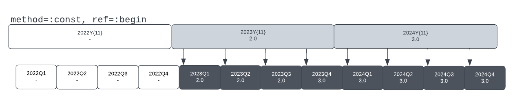
Example 4: method=:even, ref=:end
ts = TSeries(2022Q2, collect(2.0:3.0))
fconvert(Monthly, ts, method=:even)The days covered by 2022Q2 include the end-days of three months, 2022M4, 2022M5, and 2022M6. The value for this quarter is therefore divided by three and applied to these months. The procedure for 2022Q4 is similar.
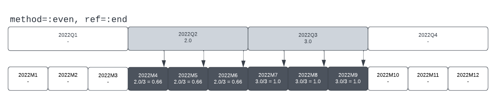
If we had specified ref=:begin, we would have checked against the start day of each Monthly MIT, but in this case the outcome would have been the same.
Converting TSeries to a lower or equal frequency
Conversion of TSeries to a lower or equal frequency depends on the method and ref chosen, with the main differences arriving between the :point method and the other methods.
On or before principle with method = :point
When the conversion method is :point the output series will contain the latest input values whose start/end dates fall on or before the start/end date of each output MIT, depending on the value of ref.
With this method, it is only necessary to determine which single value from the input tseries corresponds to each period of the output tseries. When ref is :end the values for both the input and the output series are assumed to be recorded on the last day of each MIT, and the approach is to determine whether a valid value in the input series corresponds to the last day in the output MITs. On the other hand,when ref is :begin, the values for both the input and output series are assumed to be recorded on the first day of each MIT and the approach is similarly to determine whether a valid value in the input series corresponds to the first day in the output MITs. The following goes into more detail.
When the method is :point and the ref is :end each value in the input TSeries is ascribed to the last date in each MIT in that series. The last value which comes on or before the last date in each output period is then chosen as the value for each output period.
The range of the output period is determined based on the availability of data:
- The first output period is the first period which contains at least one value from the input tseries.
- The last output period is the last period for which there are no missing input values. That is, (1) at least one input value is available, and (2) the last input value is ascribed to a date which is less than one full input period from the last date in the output period.
Example 5: method=:point, ref=:end (1)
ts = TSeries(2022M3, collect(3.0:10.0))
fconvert(Quarterly, ts, method=:point, ref=:end)In this example, the output series has a value for 2022Q1 because there is an input value for that period on March 31st, 2022, which comes on or before the last day of 2022Q1. There is no value for 2022Q4 because there is are one or more full input periods which would have provided data in Q4, but for which there are no input values.
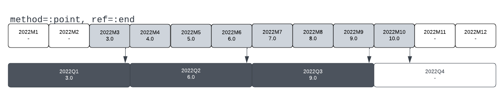
Visually, the value for each output period is taken from the last input MIT whose last day is within the output MIT. This is better illustrated by the next example.
Example 6: method=:point, ref=:end (2)
ts = TSeries(2022Q3{2}, collect(3.0:10.0))
fconvert(Yearly, ts, method=:point, ref=:end)As mentioned in the example above, the value for each output period is taken from the last input MIT whose last day falls within each output MIT. Thus, the value for 2022Y comes from 2022Q4{2}, whose last day is November 31st, 2022. The value for 2023Y similarly comes from 2023Q4{3{2}. There is no value for 2025Y as there are one or more full input periods corresponding to 2024Y which do not have a value in the input series.
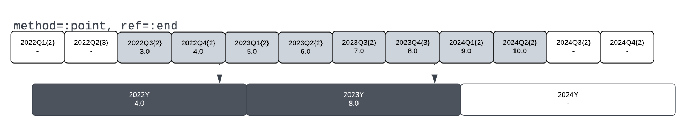
When the method is :point and the ref is :begin the approach from above is mirrored. Each value in the input TSeries is ascribed to the first date in each MIT in that series. The last value which comes on of before the first date in each output period is then chosen as the value for each output period.
The range of the output period is again determined based on the availability of data:
- The first output period is the first period for which there are no missing input values. In essence it requires a value from an input period whose first date is on or before the first date of the output period.
- The last output period is the last period for which there is an input period with a start-date on or before the start-date of the output period.
Example 7: method=:point, ref=:begin (1)
ts = TSeries(2022M3, collect(3.0:10.0))
fconvert(Quarterly, ts, method=:point, ref=:begin)In this example, the output series has no value for 2022Q1 as there is no input value which is recorded on or before Jan 1st, 2022. There is an output a value for 2022Q4 as the input value from 2022M10 is recorded on of before the first day of 2022Q4, i.e. October 1st, 2022.
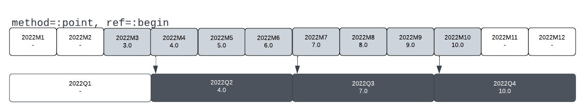
Visually, the value for each output period is taken from the input MIT which covers the start-date of the output MIT. This is better illustrated by the next example.
Example 8: method=:point, ref=:begin (2)
ts = TSeries(2022M3, collect(3.0:10.0))
fconvert(Quarterly, ts, method=:point, ref=:begin)As mentioned in the example above, the value for each output period is taken from the input period which overlaps the first day of each output period. Thus, the value for 2023Y comes from 2023Q1{2} and the value from 2024Y comes from 2024Q1{2}. There is no value for 2022Y as there is no input period covering January 1st, 2022.
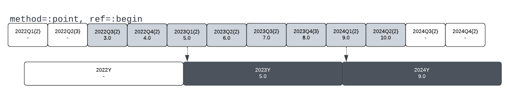
Within principle with method = :mean | :sum | :max | :min
When the conversion method is method = :mean | :sum | :max | :min the output series will contain values corresponding to some transformation of the collection of input values whoes start/end dates fall within each output MIT, depending on the value of ref.
The approach is similar to the the :point method but with some nuance around the assignment of imput-period values to output periods and the requirements around the inclusion of output periods.
Specifically:
- Input period values are assigned to each output period covering the start or end date of each input period, depending on the
refargument. - Output periods are included if there is a value available for all the input periods with start/end dates covered by the output period.
Thus, these methods require that each output period is entirely covered by input values. By contrast, the :point method makes allowances for values at the start/end of the output range, depending on the ref argument.
Furthermore, these methods only assign values to output periods from input periods which directly align with output periods. By contrast, the :point method, particularly with ref=:begin, will assign values to an output period which were recorded before the start of said output period.
Once the values corresponding to the output period have been determined, a caluclation is made based upon the method chosen:
:mean- The values are summed and divided by the number of input values.:sum- The values are summed.:min- The lowest value is selected from among the input values.:max- The highest value is selected from among the input values.
The default is :mean. The default ref is :end.
Example 9: method=:mean, ref=:end (1)
ts = TSeries(2022M3, collect(3.0:10.0))
fconvert(Quarterly, ts, method=:mean, ref=:end)In this example, the months of April, May, and June, 2022, feed into 2022Q2 and the output series has a value for 2022Q1 because there is an input value for that period on March 31st, 2022, which comes on or before the last day of 2022Q1. There is no value for 2022Q4 because there is are one or more full input periods which would have provided data in Q4, but for which there are no input values.
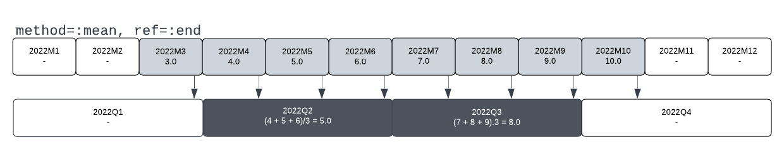
In this case, becasue the months and quarters align perfectly, the result would be the same if ref=:begin had been provided.
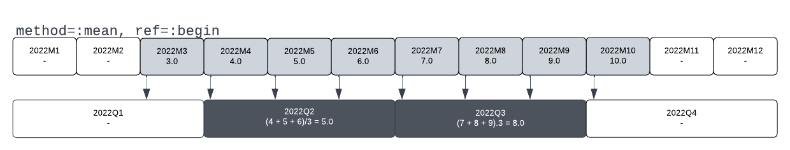
Example 10: method=:mean, ref=:end (2)
ts = TSeries(2022Q2, collect(2.0:11.0))
fconvert(Yearly{11}, ts, method=:mean, ref=:end)In this example, the end of 2022Q4 falls within 2023Y{11} (which spans from December 2022 to November 2023). The value for 2023Y{11} is therefore (4+5+6+7)/4 = 5.5. A similar logic applies to 2024Y{11}. There is no value for 2022Y{11} as there are one or more input quarters missing whose end dates fall within 2022Y{11}. In this particular case, both 2021Q4 and 2022Q1 are missing.
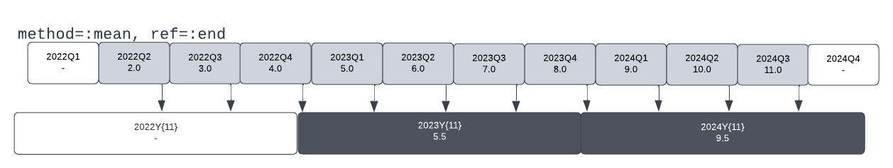
Example 11: method=:mean, ref=:begin
ts = TSeries(2022Q2, collect(2.0:11.0))
fconvert(Yearly{11}, ts, method=:mean, ref=:begin)In this example, the start of 2023Q1 falls within 2023Y{11} as do the starts of the following three quarters, the values for 2023Y{11} is therefore (5+6+7+8)/4 = 6.5. Note that this is higher than the value for this output period in the previous example. There is no output value for 2022Y{11} as there are one or more input periods missing whose start-dates overlap with this period, in this case, only 2022Q1. Similarly, there is no output value for 2024Y{11} as there are one or more input quarters missing whose start-dates overlap with this period. In this case, only 2024Q4.
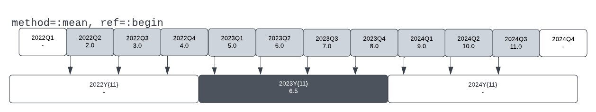
Converting a TSeries with the :linear method
When ref=:end the values will be interpolated linearly between end-points in the input series with the observed values falling on the output MIT covering the last date in each input MIT. The values change between the first and second of the input MITs are interpolated linearly backwards across the the output MITs covered by the first input MIT so that the entire range covered by the input MITs is represented in the output MITs.
When ref=:begin the values will be interpolated linearly between start-points in the input series with the observed values falling on the output MIT covering the first date in each input MIT. The values change between the second-to-last and last of the input MITs are interpolated linearly forward across the the output MITs covered by the first input MIT so that the entire range covered by the input MITs is represented in the output MITs.
TimeSeriesEcon vs FAME
Much of the behavior of time series conversions is implemented to mirror conversions performed with the FAME (Forecasting Analysis and Modeling Environment) software. The conversions of TSeries correspond in large part to the following table.
| TSE method | TSE ref | FAME technique | FAME observed |
|---|---|---|---|
| :mean | :end/:begin* | discrete | averaged |
| :min | :end/:begin* | discrete | low |
| :max | :end/:begin* | discrete | high |
| :sum | :end/:begin* | discrete | summed |
| :const | :end | constant | end |
| :const | :begin** | constant | beginning |
| :even | :end | discrete | summed |
| :even | :begin | N/A | N/A |
| :point | :end | discrete | end |
| :point | :begin | discrete | beginning |
*When ref=:begin achieving the FAME equivalent requires first converting the input series to a daily series using convert(ts, daily, discrete, beginning) with ignore off.
**Achieving the FAME equvalent requires first converting the input series to a daily series using convert(ts, daily, constant, beginning) with ignore off.
For conversions using ref=:begin the range of the FAME series may be longer than the range of the TimeSeriesEcon series due to the effect of the ignore option.